This is part 2 of the fundamentals in constructing your very own dimensional portal or vehicle. This post continues that same slow, methodical study of how one would go about constructing their very own dimensional portal. This is a systems integration point of view, rather than anything else.
So, to review…
In part 1, we discussed some scant examples found on the internet. Most of which didn’t say much of anything. However, if you look between the lines on them you see some ideas all similarly related. The major hurtle is that they all assume a universe that simply does not exist.
So, by looking at the ideas garnered through that initial post, we can consider them to have pretty much laid out the ideas which we can add to our narrative…
- Individual world-lines are fixed, static places within the reality universe.
Consider a world-line to be a frozen snapshot of time. Nothing actually moves within it. It's just solid, fixed and never changing.
- Time is the movement of individual consciousness though these places.
This is something that I have repeatedly stated over and over again throughout this Metallicman effort. If you don't understand what time actually is, you will never understand world-lines.
- Each world-line is a very complex representation of a static place.
It's not just that the physical elements are represented, but the non-physical elements are represented as well.
- This representation can best be described as a “frozen moment” of a complex graph of frequencies.
Since we know, by quantum physics, that every thing in our "universe" can be represented as either a particle or a wave. And all waves can be associated with a specific frequency. Then, all things within a "frozen" world-line can be associated with a complex set of frequencies. As such, we can do all sorts of things with it. From using it as a "homing beacon" to go to, or to return to. Or to note that it is something that should be avoided.
- By knowing the set of frequencies associated with a given world line, we can establish a set of coordinates associated with it.
If there was a way that we could take a "snapshot" of a given world-line, we would see a complex collection of frequencies. All these frequencies would be associated with the gravity measurement at that (apparent) moment of "time".
World-line travel can thus be the manipulation of frequencies of location.
The frequencies of location.
Taken together, if you can have coordinates at your present location, and provide coordinates at your destination location you can map out your route. Just like we all do using GPS.
But, the GPS system uses satellites, software algorithms, and a small army of engineers and technologists to maintain. How can you use this kind of system for world-line travel?
You don’t.
Instead you need to take a “snapshot” of your current location. This “snapshot” will contain the attributes that are associated with your geographic time, place and environment.
So the question really becomes “how”?
How do you take a “snapshot” of your current environment in such a way that it includes all elements of your current environment?
Your “snapshot”.
I’m going to “cut to the chase” and summarize a few things.
- Precise measurements of localized gravity can be an effective measurement of your current world-line position.
- But, it does not provide you a map. If you punch in destination coordinates of a different gravity reading, you have absolutely no way of knowing where you will end up.
For instance, if you leave at a gravity reading of 121.8723675092384 then where would a gravity reading of 121.8276746592847536 take you?
- So gravity can be used to take you to similar world-lines, but it cannot be used to determine world-line types and deviance parameters.
- An other method has to be utilized to map out the world-line terrain.
That other method is to utilize the frequencies associated with the gravity reading at any given world-line.
A "snapshot" of the gravity of your departure coordinates can be translated or processed to produce a complex graph of all the various waveforms and their frequencies at that moment in time.
Using the snapshot as an anchor.
Now, if the coordinates are related to the frequency “snapshot” at any given moment of time…
… the manipulation of the frequency around a person, vehicle, or door, can teleport a person or object to the destination coordinates.
In other words, we are going to utilize the Alan Holt's Field Resonance System to conduct world-line travel.
So let’s discuss collecting the frequencies of a departure coordinate.
[1] The overall scheme.
Here we are going to discuss using vibrations and frequencies associated with gravitational masses to obtain world-line coordinates.
It works just like this…
- You create an area with a fixed “portal”.
- You then identify the “geography” of the gravitational signatures of that specific area / portal.
- Using flux-gate technology, you isolate the gravitational signatures of a person entering the portal from the portal gravitational signature.
Now, we need to associate frequencies with the gravitational signiatures.
- You take a measurement of the frequencies associated with the gravitational portal at a specific fraction of time.
- You do the same thing of a person entering the portal at that specific fraction of time.
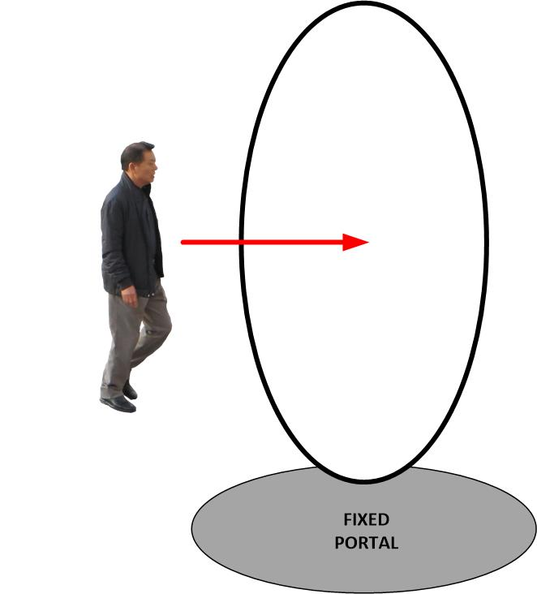
These frequencies are very complex, but they can tell us where we are at any given moment within any given world-line.
Now, in a split second, using the Alan Holt’s Field Resonance system, you change the frequencies within the portal. You alter the frequencies such that the gravitational associated frequencies of the person entering the portal do not change, but the frequencies associated with the surrounding environment does actually change.
You change the frequencies of the portal location, not the person. All the while you use field resonances to “squeeze” or “slide” the individual into the new portal coordinates.
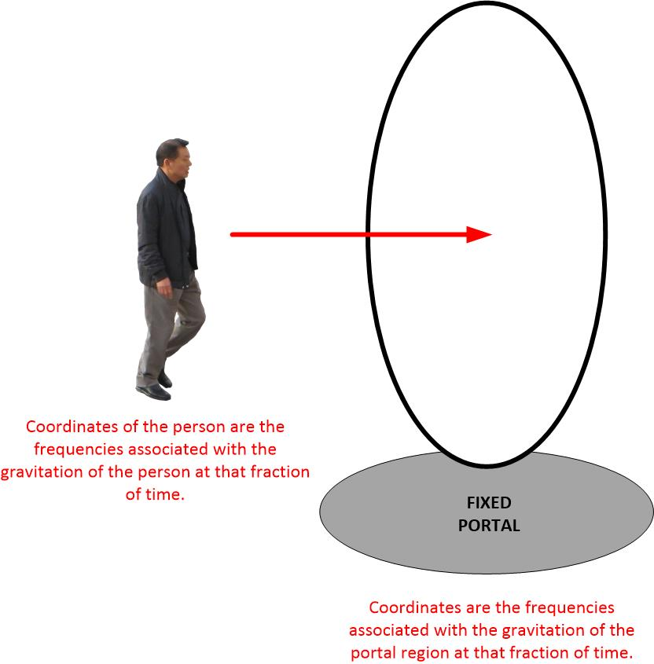
Now, we are going to discuss how this is done, step by step over the next couple of posts in this series.
We will start with [2], how to isolate gravity masses within an area. Then we will convert those gravity readings into frequencies.
This is a very important step as it is used to isolate the person who walks into a portal from the portal itself.
Thus, the world-line slide, or cross-over, can be obtained by isolating the frequencies of the portal from the person. Using the Alan Holt Frequency resonance system to slide that person into the new coordinates.
And that is how it works.
[2] Association of a frequency to a given world-line.
To identify your local region, you need to separate it out from all the “clutter” of the surrounding regions. Otherwise, your “map” with start with a confused jumble of data. Much like oil painting. When you keep on painting and painting in oils, and don’t separate the colors, eventually everything turns into a muddy ugly brown color.
Luckily, there is a technique for this. It’s called “Regional residual anomaly separation”, and it is one of the important tasks in gravity inversion and interpretation for the detection of oils, minerals and cavities underground.
So, we can “piggy back” on the work already done.
So here is the procedure (so that you all don’t get too bogged down into all the details…
- Identify a physical region; a person, a place, a thing, a vehicle.
- Identify and isolate the gravity of that object (parts 2a – 2g) below.
- Take a “snapshot” of the frequencies associated with that specific region of gravity.
[2a] Regional residual anomaly separation
We can use any number of the gravity separation methods that have already been developed. All of which have been based on different characteristics of regional and residual gravity fields. Of course, each one has it’s advantages and disadvantages.
- Graphic smoothing and N-point smoothing(Wanget al 1991)
- Polynomial surface fitting (Beltraoet al 1991)
- Minimum curvature method (Mickuset al 1991)
- Finite element analysis (Mallick and Sharma1999)
- The stripping method (Weiland 1989)
- And finally, Li and Oldenburg (1998) proposed to separate the regional anomaly using a 3D magnetic inversion algorithm.
Based on different spectral characteristics of gravity and magnetic anomalies, filters can be used for more precise gravity separation.
- The Wiener filtering (Pawlowski and Hansen 1990)
- Wavelength filtering (Kane 1985)
- Band pass filtering (Ridsdill-Smith 1998)
- Preferential continuation filtering (Pawlowski 1995).
Of course, all these methods are simply number crunching of sensory inputs from a “flux gate” and processed within a complex computer algorithm.
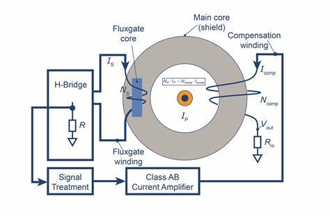
[2b] Use of the wavelet transform
There is more than one way to process the information obtained from a flux-gate sensor.
In recent years, the wavelet transform has widely been used in gravity data processing and interpretation. This is primarily due to its pretty good property of multi-scale analysis, and as a result, it has become an important method to isolate gravity readings from that of an anomaly.
The examples of people using these techniques to isolate the frequencies of localized gravity anomalies is pretty well documented;
- Fedi and Quarta (1998) used a discrete wavelet transform to separate the regional potential gravity fields, and determined the rational decomposition results as a regional gravity anomaly by “minimum entropy compactness criterion”.
- Ucanet al (2000) also used the multi-scale wavelet transform to separate the regional anomaly field and achieved satisfactory results in the synthetic model test.
- Yanget al (2001) analyzed the gravity data of China using the discrete wavelet transform and interpreted the geological implications of the decomposition results.
[2c] Other used for the Multi-scale gravity wavelet analysis.
This algorithm can be used in numerous ways. In general, the more versatile it is, the more exactly can you separate out the gravity frequency variations.
The multi-scale wavelet analysis can also be used in…
- Data denoising (Lyrioet al2004)
- Geological boundary locating (Marteletet al,2001)
- Source parameter inversion (Sailhac andGibert2003).
Besides the Euclidean wavelets, the spherical wavelets method has been developed in the last ten years (Freeden and Windheuser 1996,1997)…
[2d] The Spherical wavelet transform
The spherical wavelet transform has similar multi-scale analysis properties as the Euclidean wavelet transform. It can be expressed by the convolution of a signal with a dilation and rotation of a spherical mother wavelet upon a sphere.
Compared with the Euclidean wavelets, spherical wavelets are widely used in large-scale data analysis, especially for the spherical earth.
It has been used to study…
- The global gravity field (Fengleret al 2004, 2007)
- Earth magnetic field (Freedenet al 1998)
- Earth inner structure (mass-density distribution) (Michel 2005).
The traditional spectrum analysis is usually used to assist wavelet analysis and interpretation of gravity and magnetic anomalies.
- Albora and Ucan (2001) present a synthetic example of gravity anomaly separation using wavelets, and estimate the average depth of buried bodies from the spectrum.
- Qiuet al (2007) discuss the ability of the wavelet transform to improve the resolution of gravity anomaly and use depth estimation from spectrum analysis to analyze the wavelet decomposition results.
[2e] Theory of wavelet transform and spectrum analysis
Wavelet transform
Assuming that f(x)is a square integrable function, its wavelet transform can be expressed as…
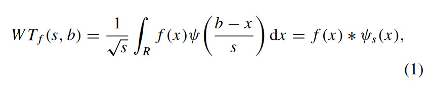
where…
- ψ(x) is the wavelet basis or the mother wavelet function,
- s>0 is the scale factor,
- b is the translation parameter,
- R is the integration domain,
- ψs(x) is the dilation of wavelet basis
- ψs(x) = 1√sψ(xs). (∗means convolution).
In the frequency domain, equation (1) can be equivalently expressed as
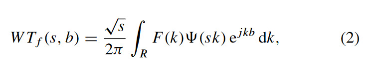
where …
- (ω) is the Fourier transform of ψ(x),
- √s (sk) is the Fourier transform of ψs(x).
Generally, the scale factor can be connected with the frequency by
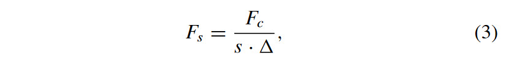
where Fs is the equivalent frequency of wavelet transform at scales, Fc is the center frequency of the wavelet basis function,and is the sampling rate.
From the frequency domain expression (equation (2)), the wavelet transform of the signal f(x) can be viewed as the filtering result with the wavelet filter at either…
- Different scales (Yang 1999) or
- Using the filter banks operation (Strang and Nguyen 1997).
Generally, a large-scale wavelet transform can be used to separate the regional gravitation.
Wavelets can be selected for a gravity anomaly analysis according to some specific criteria, such as…
- Similarity between signal and mother wavelets (Xuet al 2004)
- Minimum entropy compactness criterion (Fedi and Quart a 1998).
In this example, we will select the wavelet according to its frequency response character.
Based on the knowledge of the spectral character of anomalies, a low-pass and isotropic wavelet filter is more appropriate for regional anomaly separation.
Here, we can look at the properties of the Halo wavelet in a specific frequency domain and then apply it in order to separate out the regional anomaly. In effect, isolating a particular body (a person, object, vehicle, or in this example, a rectangular box) from all the background gravitational influences.
The Halo wavelet basis function is a modification of the Morlet wavelet (Kirby2005).
It can be expressed in the frequency domain as
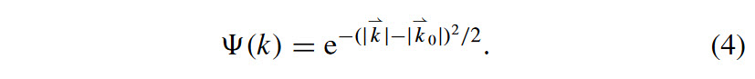
Its spectrum character is shown in figure 1.
The Halo wavelet basis is symmetrical and isotropic in the frequency domain. It is a low-pass wavelet filter with a small k0 value.
According to uncertainty, the bandwidth and the center frequency of the dilated wavelet decrease when the scale increases.
Therefore it is necessary to select the wavelet transform at a proper scale in order to get low-frequency regional anomalies.
From the definition of the wavelet transform, it can be computed by either, [A] convolution in the space domain or [B] multiplication in the frequency domain.
We compute the wavelet transform in the frequency domain based on equation (2), and the implementation steps are listed below:
(1) Compute the Fourier transform G(⇀k) of the original anomaly signal g(⇀x).
(2) Multiply the anomaly spectrum G(⇀k) with Halo wavelet (⇀k) in the frequency domain, and get the wavelet transform at scales=1; W(⇀k)=G(⇀k)×(⇀k).
(3) Compute the inverse Fourier transform of W(⇀k) and get the wavelet transform result w(⇀x) in the space domain.
(4) Calculate the wavelet transform of different scales with the dilation wavelet basis, and get the result of the wavelet transform result at different scales following steps (2)and (3).
The maximum decomposition scale relates the dimension of the original data, and the scale can take continuous values with a maximum of half of the data dimension.
Here we take s=2a in the wavelet decomposition (a=0, 0.5, 1, 1.5,…,the order of decomposition). This is the graphic representation of that algorithm.
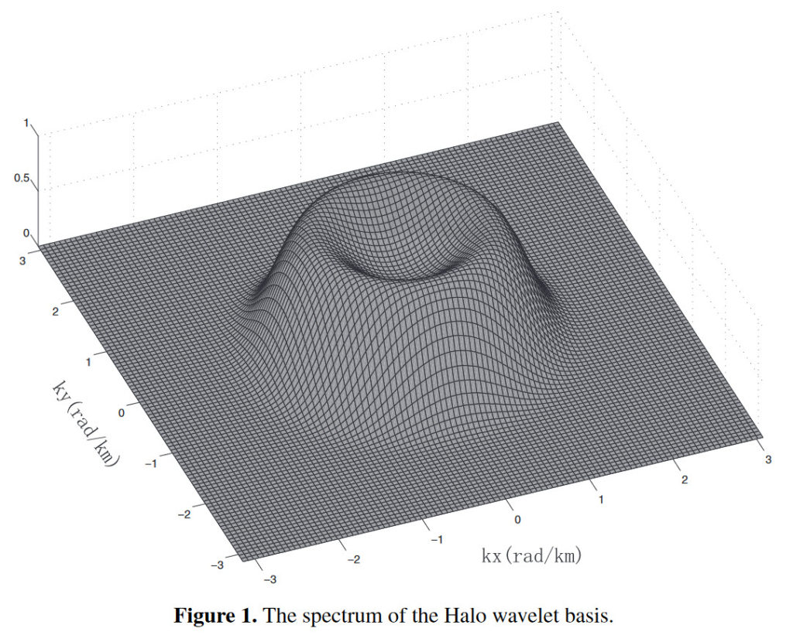
Spectrum analysis and depth estimation Spector and Grant (1970) studied the relationship between the energy spectrum of anomalies and the average depth of source bodies under a statistic assumption.
It provided a foundation for anomaly source parameter estimation and filter designation for anomaly separation (Dolmazet al 2005, Wanget al 1991).
The energy spectrum of anomalies can be presented by the formula:
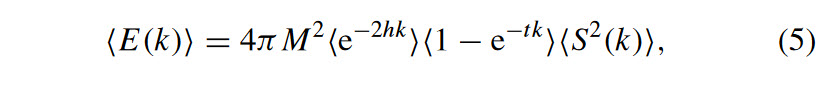
- where〈〉stands for ensemble average,
- M is the magnetic moment/unit volume,
- h is the depth to the top of source body,
- t is the thickness of the source body,
- k is the radial wave number,
- S(k) is the factor for the horizontal size of the source body.
It will be found that the depth factor〈e−2hk〉dominates the spectrum.
It turns out that the effect of the extension factor〈1−e−tk〉and the horizontal factor〈S2(k) are both comparatively small.
This is especially true in the low-frequency bands.
Simplifying the equation based on these practical realities, we find that the energy spectrum can be simplified as…
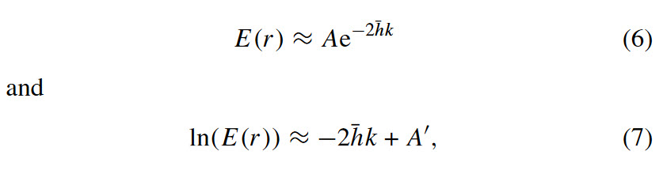
where…
- A and A′ are constant coefficients, ̄
- h is the average depth of the source body. (Relative to the sensor position.)
In practice, the linear fitting results of different spectrum segments are plotted on the semi-log plot of energy spectrum versus radial wave number for convenience. It helps to best visualize the effectiveness in this technique for the isolation of gravity influences on specific bodies.
The slopes of the best-fit straight lines of spectrum segments of logarithm energy spectrum versus radial wave number plot tend to indicate the average depth of the sources. Which is why this technique has enormous benefit in the geology sciences.
[2f] Proposed gravity frequency separation experiment
You do not need to have a buried treasure, a submerged sunken battleship, or a cavity filled with gold to validate this gravity isolation technology. You can use a shoebox, a briefcase, a coffeecan, or some other small sized object.
Here, we see a modeled object that is then scanned with flux-gate sensors to determine the degree of separation of different gravity values which can be observed.
Consider a cuboids combination model for the gravity field separation experiment by the wavelet transform.
This model consists of six cuboids: the largest one is located in the deepest part to simulate the regional anomaly, and the other five smaller ones with the same size are located in the shallower part at the center and four corners of the survey area to simulate the local anomaly field (figure2(a)).
The relevant parameters are listed in table 1.
Since this project was designed for large objects, the coordinate origin is located at the center of the survey, the grid spacing is 0.1 km, and the survey area is 100 km×100 km.
Using the forward calculation formula of rectangular bodies (Blakely 1995), we can calculate the gravity anomalies of the model and the corresponding regional and local anomalies, which are respectively shown in figures 2(b)–(d).
From the spectral analysis of the total, regional and local anomalies (figure3), the anomaly energy is mainly concentrated in the low-frequency band (0–0.4 rad km−1).
The target object has an energy in the low-frequency band.
The regional anomaly energy is dominated in the low-frequency band (0–0.4 rad km−1), while the local anomaly energy is dominated in the mid-high frequency band (above 0.4 rad km−1).
The surrounding environment has energy in the high-frequency band.
The two anomalies have different spectral distribution characteristics.
Therefore, it is feasible to separate anomalies of different frequency bands. Or, for our specific consideration, to isolate (say) a person walking through a “dimensional portal” and the “dimensional portal” itself.
The spectrum of the total gravity anomaly can be divided into three segments in the following frequency ranges: 0–0.05, 0.05–0.60 and above 0.60 rad km−1. In other words, we can identify frequency cut off criteria to isolate specific gravitational masses as they enter a portal, or when part of a larger mechanism, such as a vehicle.
They represent the regional anomaly with low frequency and high energy, the local anomaly with intermediate and high frequencies, and the high frequency signal characterized with very small energy,respectively.
In this example we choose the Halo wavelet basis to process the gravity anomaly based on the spectral character. Taking k0=0.6 and the corresponding scales=25.5, the transform result is…
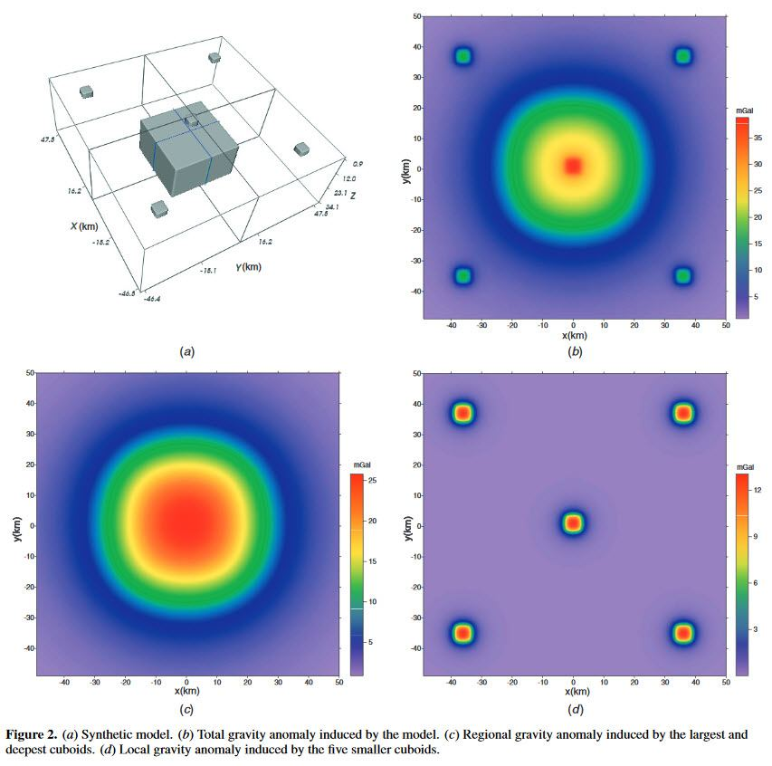
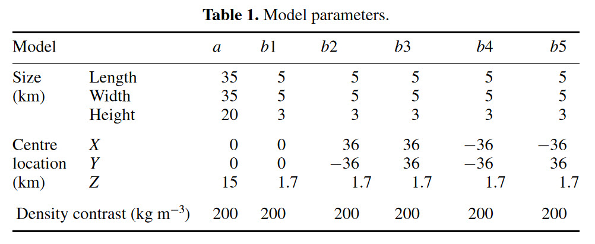
taken as the regional anomaly, and the difference between this result and the original anomaly is taken as the local anomaly (figure4). It has achieved satisfied separation results compared with the theoretical anomalies (figures 2(c) and (d)).
[2g] Conclusions related to gravity separation determination for world-line mapping
There is no singular solution to gravity separation of a person from the surrounding portal. However, the basic technique remains the same.
In this example, we used a convention that illustrated the separation of a regional anomaly using the wavelet transform. And thus, according to the spectrum analysis their gravity estimation results.
The isotropic and low-pass wavelet filter, Halo wavelet, is used in the synthetic and real data processing.
The separation test on the synthetic model indicates that the wavelet analysis can separate the anomaly effectively. And thus, a person walking into a dimensional portal can effectively be isolated into separate gravitational entities at any given specific moment in time.
[3] Some notes
Here are some notes that I should not take for granted.
The “fixed dimensional portal” is just a coordinate. There isn’t a frame, or a physical door, or an arc or shimmering surface like you see in Hollywood. It’s just a place. It could consist of a bare space in a empty warehouse that is marked by a piece of tape on the floor.
The only thing that is important is that the exact moment that a person walks into the portal must be taken into consideration.
At that split fraction of a second, the flux-gate sensors must measure the entire gravitational environment. Convert it all into frequencies. Subtract the person from the surrounding environment. And use the Alan Holt resonance procedure to slide the person into the new world-line.
The more accurate the sensing, the better the results.
Therefore, I urge a large number of flux-gate sensors be used in regards to this.
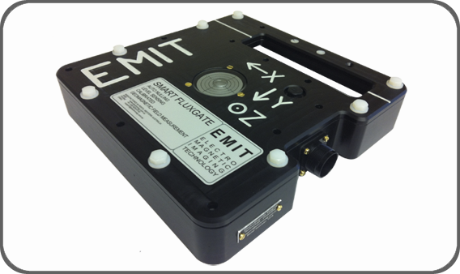
[3] How to associate frequencies with gravitational readings.
You create a "profile" that describes the geography of the gravity of the objects associated with the portal. Then you take measurements of the frequencies associated with those gravity objects (HFGW). This creates a very complex frequency profile. It is what you use to isolate the components within the portal.
The subject of High Frequency Gravitational Waves (HFGW) has attracted considerable interest in the US government over the last few years. Apparently as soon as it was publicly announced that gravity is associated with gravitation “waves” o frequencies, the first response by the American government is to suppress all science related to it.
In September 2007, HFGW came to the attention of the National MASINT
Committee of ODNI.
In turn, staff at this committee asked JASON to review both the underlying science and technology of HFGW, and their implications for national security. They wanted to move all R&D associated with HFGW into the black and prohibit any further public work on the technologies.
JASON hosted briefings during June 17-18, 2008 from individuals both inside and outside the US government, and also collected about a thousand pages of printed or electronic material. They concluded that the then proposed applications of the science of HFGW are fundamentally wrong; that there can be no security threat. And thus no need to silence the public disclosure of any kind of research regarding it. They found that the insistence of the American government in suppressing all development and publication of independent scientific and technical work on this generally unnecessary. They concluded that the previous analysis of the Li-Baker detector concept is incorrect by many orders of magnitude; and that the following are infeasible in the foreseeable future: detection of the natural “relic” HFGW, which are reliably predicted to exist; or detection of artificial sources of HFGW. They concluded that no foreign threat in HFGW is credible, including: Communication by means of HFGW; Object detection or imaging (by HFGW radar or tomography); Vehicle propulsion by HFGW; or any other practical use of HFGW.
And that should tell you all that you need to know about how important the government places the study of High Frequency Gravitational Waves…
…The “key” to world-line travel.
In the next post we will discuss how to collect, and map gravitational waves in association with the gravitation separation techniques already discussed herein.
(I would include it here, but I really don’t have enough room in this post.)
Stay tuned…